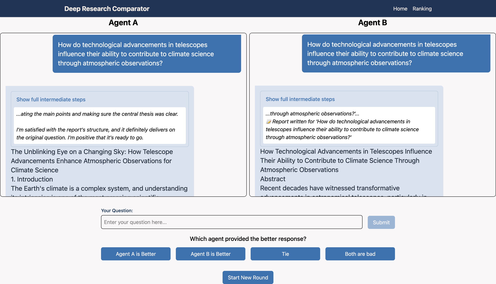

|
Jiahe Jin
Hi 👋 I am a senior undergraduate in ACM Honors Class of Shanghai Jiao Tong University, majoring in Computer Science. Currently, I am a research intern at the CX Research Group in Carnegie Mellon University, advised by Prof. Chenyan Xiong.
Previously, I was fortunate to work with Prof. Pengfei Liu at Shanghai Jiao Tong University.
My research interests include LLM agents, reasoning, and reinforcement learning. I am excited about building agents that learn through their own reasoning and experience, and with existing human knowledge.
I plan to pursue a Ph.D. in Computer Science, starting in Fall 2026. If you are interested in my research, feel free to contact me at zizi0123@sjtu.edu.cn!
CV /
Google Scholar /
Github /
Twitter
|
|
|

|
Deep research comparator: A platform for fine-grained human annotations of deep research agents
Prahaladh Chandrahasan*, Jiahe Jin*, Zhihan Zhang*, Tevin Wang, Andy Tang, Lucy Mo, Morteza Ziyadi, Leonardo FR Ribeiro, Zimeng Qiu, Markus Dreyer, Akari Asai, Chenyan Xiong
In Submission
|
|
{kind=link}
{kind=link}
{kind=link}
{kind=link}
{kind=link}
{kind=link}